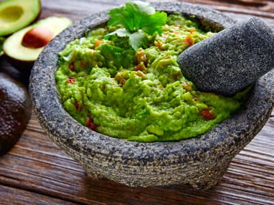

Guacamole

Description
Simply a quick recipe for tasty guacamole! Great with tortilla chips or
as a topping for Mexican foods!
Ingredients for Guacamole
- 2 Avocados
- 1 Small Onion, Finely Chopped
- 1 Clove Garlic, Minced
- 1 Ripe Tomato, Chopped
- 1 Lime, Juiced
- Salt and Pepper to Taste
Steps
- Peel and mash avocados in a medium serving bowl. Chill for half an hour to blend flavors.
- Stir in onion, garlic, tomato, lime juice, salt and pepper.
- Season with remaining lime juice and salt and pepper to taste.
- Chill for half an hour to blend flavors.